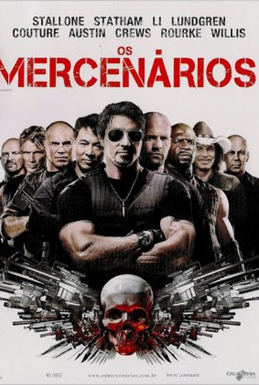

Lista de excelentes filmes
 Bad Boys: Até o Fim é o quarto filme da icônica saga de ação estrelada por
Will Smith e Martin Lawrence, iniciada em 1995 com Os Bad Boys, dirigido por Michael Bay.
Desta vez, o longa conta com Adil El Arbi e Bilall Fallah na direção e o roteiro fica por conta de Chris Bremnerirá.
O quarto filme da franquia vai mostrar como os detetives mais famosos de Miami, Mike Lowrey (Smith) e Marcus Burnett (Lawrence),
enfrentam uma reviravolta dramática: agora, eles que são os mais procurados! A caça virou o caçador e com direito a um prêmio pela
suas cabeças. Com uma mistura característica de ação eletrizante e comédia escrachada, os dois lutarão lado a lado contra tudo e contra
todos até o fim para proteger a reputação do capitão Howard e limpar seus nomes.
Prepare-se para ver os Bad Boys preferidos do mundo enfrentando todos os obstáculos em uma aventura emocionante de tirar o fôlego.
Bad Boys: Até o Fim é o quarto filme da icônica saga de ação estrelada por
Will Smith e Martin Lawrence, iniciada em 1995 com Os Bad Boys, dirigido por Michael Bay.
Desta vez, o longa conta com Adil El Arbi e Bilall Fallah na direção e o roteiro fica por conta de Chris Bremnerirá.
O quarto filme da franquia vai mostrar como os detetives mais famosos de Miami, Mike Lowrey (Smith) e Marcus Burnett (Lawrence),
enfrentam uma reviravolta dramática: agora, eles que são os mais procurados! A caça virou o caçador e com direito a um prêmio pela
suas cabeças. Com uma mistura característica de ação eletrizante e comédia escrachada, os dois lutarão lado a lado contra tudo e contra
todos até o fim para proteger a reputação do capitão Howard e limpar seus nomes.
Prepare-se para ver os Bad Boys preferidos do mundo enfrentando todos os obstáculos em uma aventura emocionante de tirar o fôlego.

Um grupo de mercenários, liderado por Barney Ross e composto de seus homens de confiança,
aceita uma missão que parece ser rotineira: uma operação secreta, a mando da Igreja, para invadir o
país sul-americano de Vilena e derrubar seu ditador. Não demora muito para o grupo perceber
que a missão é uma operação suicida. Presos em uma perigosa teia de traições, mas sabendo que um inocente está em perigo,
Barney e seus homens decidem finalizar o trabalho.
 O ex-assassino de aluguel John Wick é procurado pelo mundo todo e a recompensa por sua captura aumenta
cada vez mais. Wick descobre um caminho para derrotar a Alta Cúpula, mas antes de conquistar
sua liberdade, ele precisa enfrentar um novo inimigo com alianças poderosas e forças que transformam
velhos amigos em inimigos.
O ex-assassino de aluguel John Wick é procurado pelo mundo todo e a recompensa por sua captura aumenta
cada vez mais. Wick descobre um caminho para derrotar a Alta Cúpula, mas antes de conquistar
sua liberdade, ele precisa enfrentar um novo inimigo com alianças poderosas e forças que transformam
velhos amigos em inimigos.